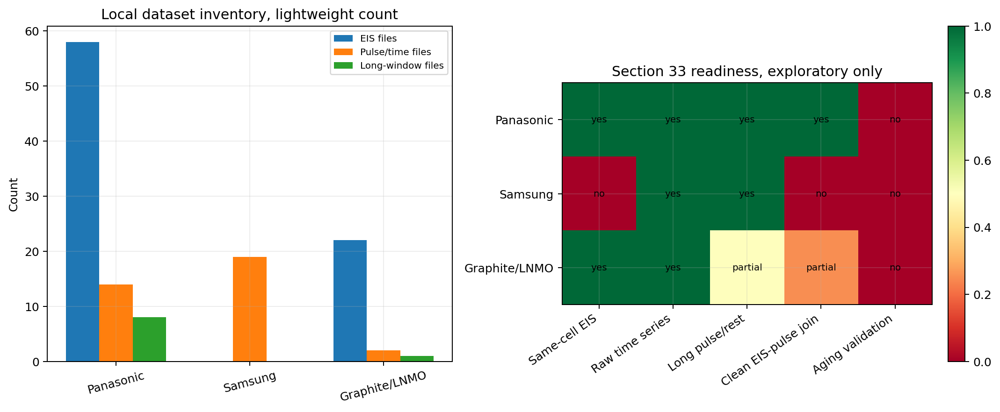
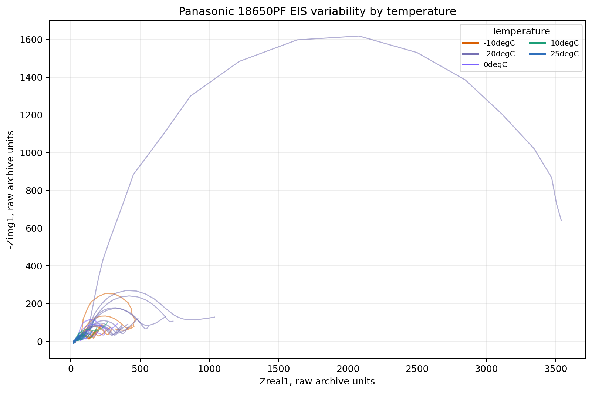
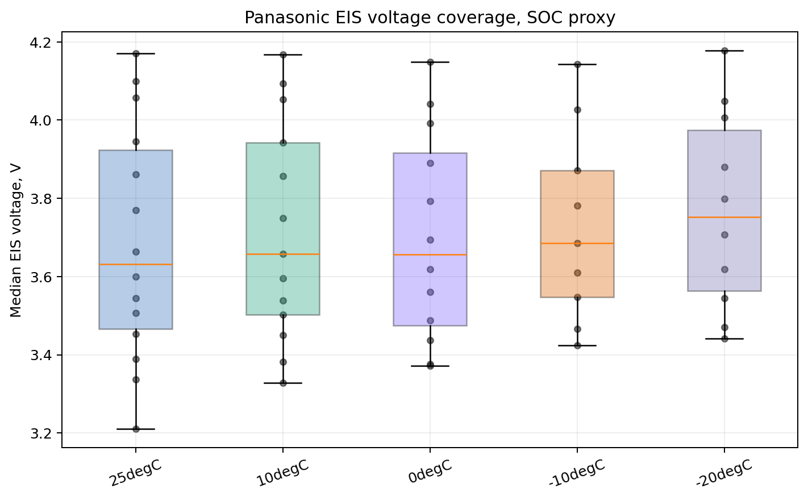
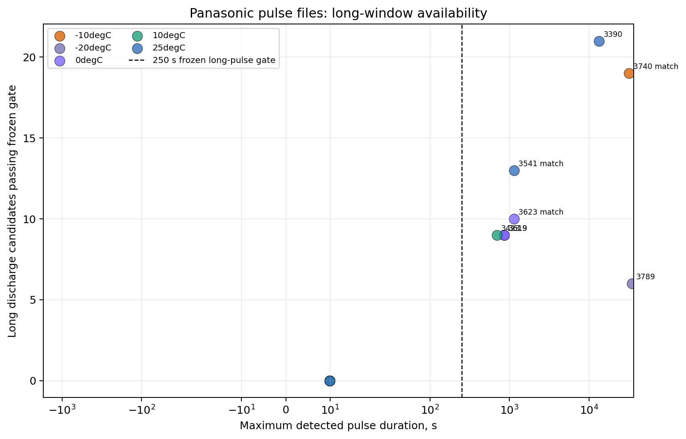
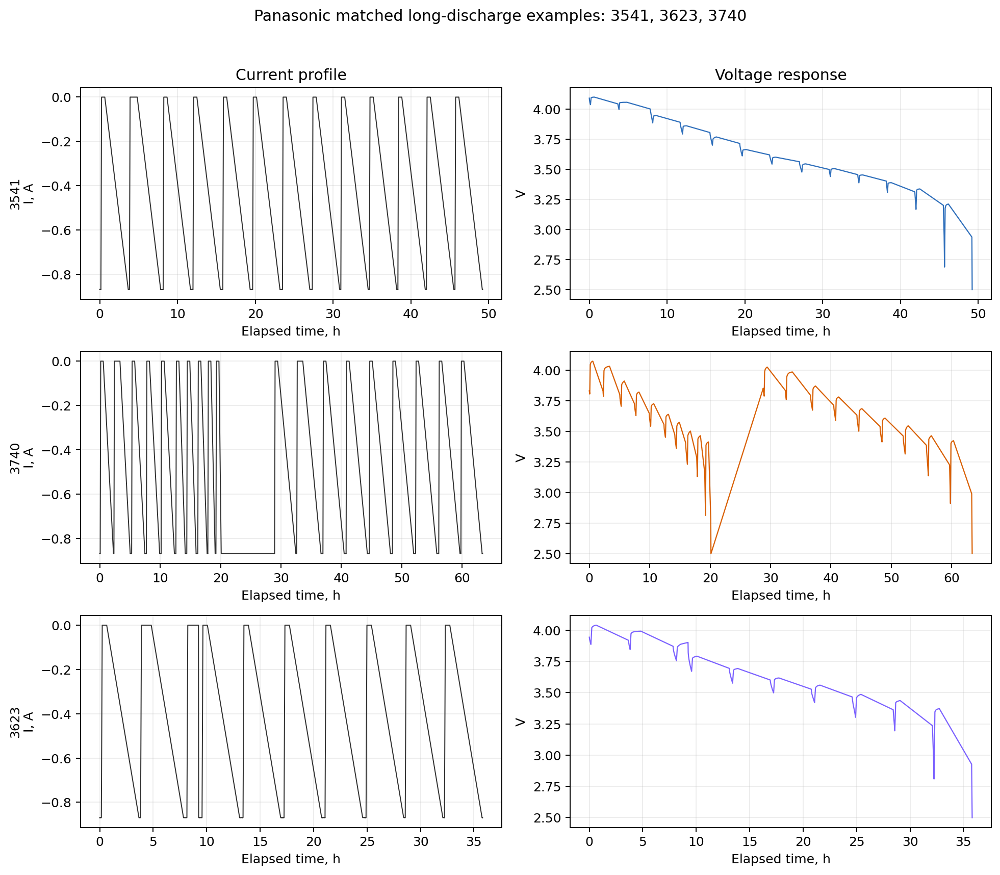
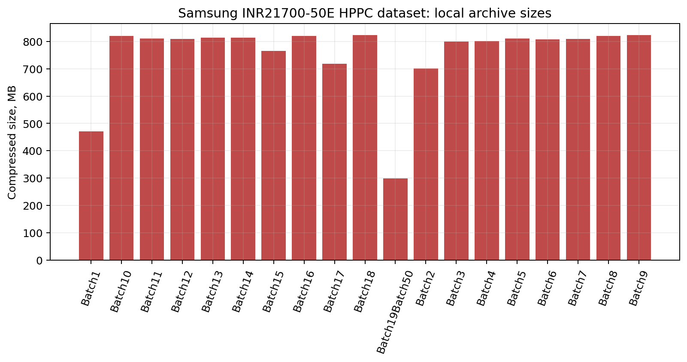
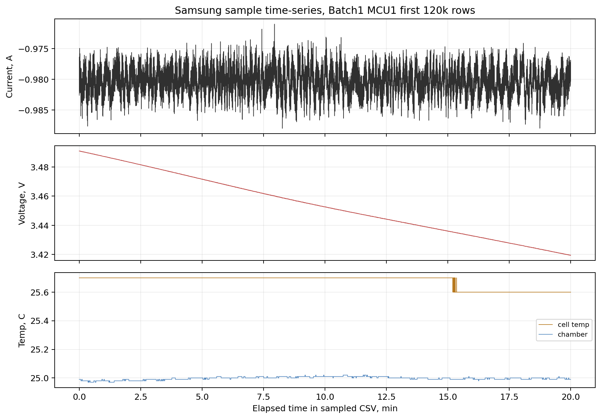
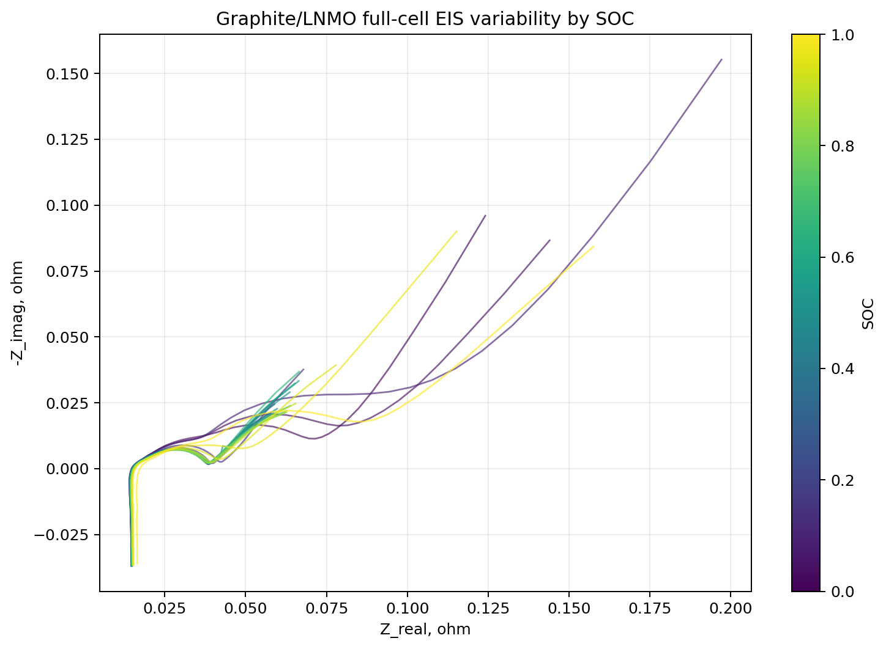
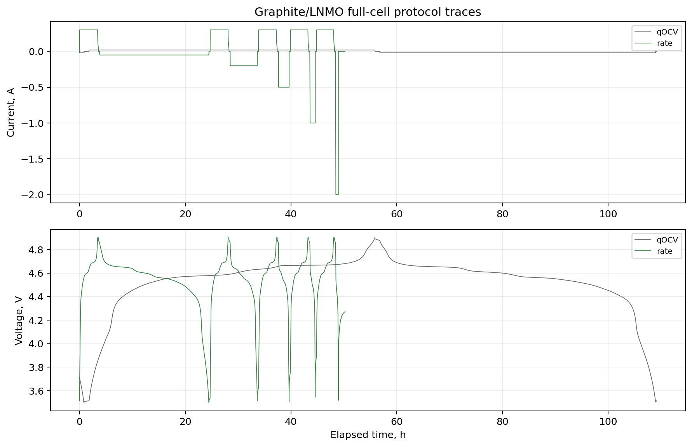
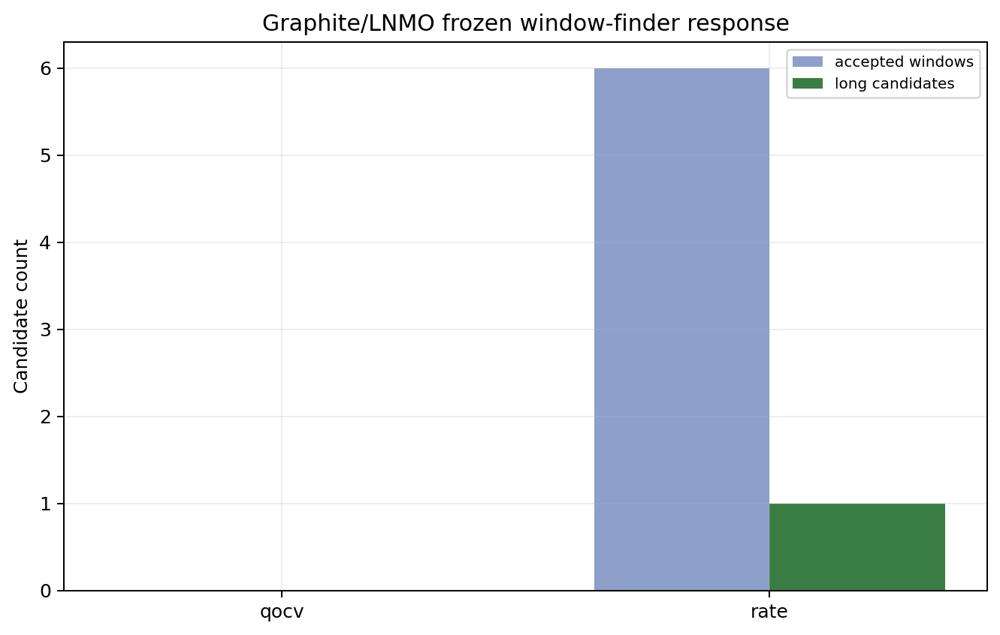

Panasonic, Samsung, and Graphite/LNMO Dataset Exploration
A presentation-style viability readout for three newly downloaded candidate datasets. This is data exploration only. It is not an external Section 33 validation run.
Panasonic 18650PF
33541, 3623, and 3740.Samsung INR21700-50E
14 GBGraphite/LNMO
22Bottom Line
Panasonic is the only one that currently deserves a real adapter attempt for Section 33 frozen inputs. Samsung is useful for pulse exploration, but without same-cell EIS it cannot validate Section 33. Graphite/LNMO has clean EIS and useful electrochemical protocols, but its full-cell qOCV file gives zero frozen candidates and the rate file gives only one long candidate.
None of the three is aging validation. Do not say otherwise. Panasonic can test the pulse-to-EIS bridge on a different cell format and chemistry context. That is useful, but narrower than validating the whole CALB aging claim.

Panasonic 18650PF
The Panasonic archive has both EIS CSVs and MATLAB pulse files across five temperatures. The true five-pulse HPPC files are too short for frozen Section 33 because they are about 10 seconds. The separate dis5_10p files are the important ones: several contain long discharge windows with enough post-rest to pass the frozen window gate.
| Signal | Exploratory finding | Usefulness |
|---|---|---|
| EIS coverage | 58 parsed EIS files across 25degC, 10degC, 0degC, -10degC, and -20degC. | Strong for spectrum variability and SOC proxy review. |
| Pulse windows | 14 pulse/time files screened; 8 files contain long candidates. | Strong enough for adapter work. |
| Clean matched IDs | 3541 at 25 C, 3623 at 0 C, and 3740 at -10 C. | Best route for frozen-input construction. |
| Claim limit | Not an aging validation dataset in this pass. | External bridge support only if the unchanged rule later passes. |



3541, 3623, and 3740 are the serious candidates.
Samsung INR21700-50E HPPC
The Samsung download is a large set of 7z archives with giant CSV reports. A streamed sample from Batch 1 shows usable current, voltage, cell temperature, and chamber temperature. That is good for pulse analysis. It is not enough for Section 33 because no same-cell EIS was observed in the local files.
| Signal | Exploratory finding | Usefulness |
|---|---|---|
| Local archive size | 19 archives, about 14.0 GB compressed. | Large HPPC corpus, expensive to process fully. |
| Sample read | 120,000 streamed rows from Batch1, MCU1. | Confirms raw time-series fields are usable. |
| EIS | No EIS observed locally. | Blocks Section 33 validation by itself. |


Graphite/LNMO
The graphite/LNMO archive is scientifically interesting, but weaker for this specific validation question. It has full-cell EIS by SOC, qOCV, rate, GITT-style files, and parameter JSONs. The frozen window finder sees zero candidates in qOCV because the current is below the hard rest threshold. It sees one long candidate in the rate file, but that is not a clean HPPC-style EIS-pulse check-up join.
| Signal | Exploratory finding | Usefulness |
|---|---|---|
| EIS | 22 full-cell EIS CSVs by SOC. | Good for spectrum-over-SOC presentation. |
| qOCV time series | 386,001 rows, zero accepted frozen candidates. | Not runnable unchanged for Section 33. |
| Rate time series | 170,726 rows, six accepted windows, one long candidate. | Possible side experiment, weak as validation. |



Downloadable Exploration Outputs
These are lightweight summaries and plot inputs produced from sampled or archive-inspected data. They are not raw dataset mirrors.
- Exploration summary JSON
- Panasonic EIS summary CSV
- Panasonic pulse summary CSV
- Samsung archive summary CSV
- Graphite/LNMO window summary CSV
Next Move
Build the Panasonic adapter first, using only the matched IDs 3541, 3623, and 3740. Do not touch lambda, thresholds, windows, candidate logic, fallback logic, or pass criteria after seeing results. If the frozen run fails, call it failure or blocked evidence. Do not rescue it.